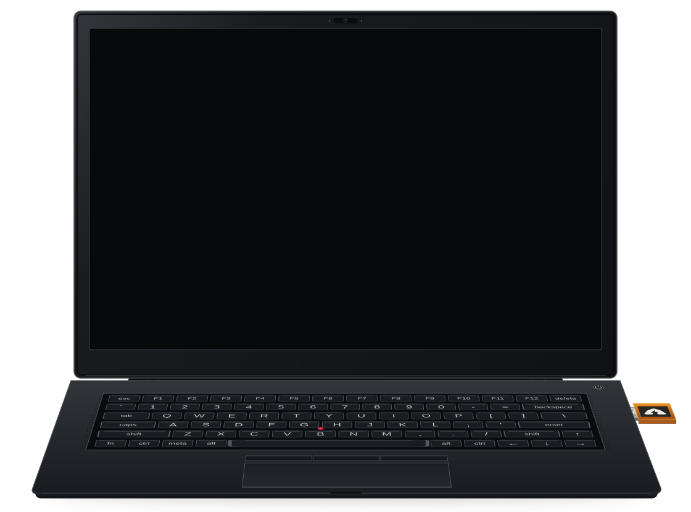

Original software. Virtual hardware.

THUNDERDEN · VIRTUAL DEVICE
Loading the original release and emulator.
Usually around 10 seconds once files are loaded. Slower devices may take longer.
Preparing the virtual device.
This demo runs the original preview.8 kernel and applications in your browser. The release image is verified unchanged. Direct kernel boot skips GRUB; no helper or replacement application is added to the guest.
Never enter real recovery words or use demo wallets for funds. A browser is not an air-gapped device. Use only public test fixtures.
Camera access is optional and requires your permission. Frames stay in your browser. Enable the camera before selecting Scan a QR code inside Thunderden.
The emulator reserves about 2.3 GiB of memory. Use one demo tab at a time. Best experienced with a desktop keyboard. The laptop and USB drive are illustrations, not physical USB passthrough. The webcam indicator turns green while browser capture is active.
Source and setup instructions
JavaScript is required to run the virtual device.